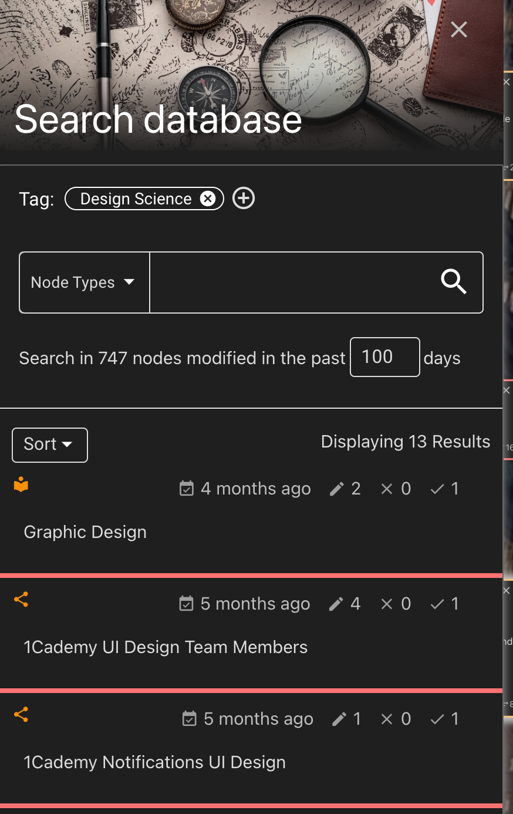
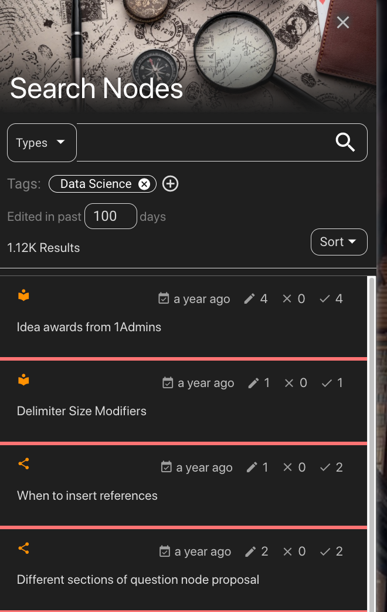

1Cademy UI Designs
Series of UI Projects Produced for the Collaborative Research Platform “1Cademy”

For the past 2 years I have been a leader of a User Interface Design team that meets weekly to review and discuss UI improvements for 1Cademy, a developing online research and learning platform. Below are some of the main projects my team and I produced during this time — each created through teamwork, shared opinions, collaborative learning of important UI principles and practices, thoughtful design decisions, and feedback from my supervisor.
Project: Lightmode
In summer 2020, I was part of a 12-person UI design team where I helped identify UI issues, explored and prototyped solutions, and worked with the development team to implement UI improvements.
One project I worked on was the creation and design of a “Lightmode” feature (shown below) with two other team members, from inception to CSS implementation — previously the platform only existed in Darkmode. This mainly involved finding appropriate colors for the font, icons, and element backgrounds, and re-evaluating consistency across the site following Material Design System elevation guidelines (darker elements towards the back, lighter elements on top to give depth). This Lightmode feature is fully implemented in CSS and used by the majority of 1Cademy users.
Project Takeaways
Overall, my time working on this platform reinforced the importance of making sure all elements afford their use and have a clear, distinct purpose, so the site remains fully functional while staying as simple and straightforward as possible. I continue to work on this platform and currently serve as the Project Leader for the 1Cademy UI Design Community.
Project: Search UI
This small side project involved re-evaluating the space used at the top of the search panel on 1Cademy. Through a reassessment of each element’s usage in that space, I re-designed the layout so the arrangement was more efficient and emphasized clickable features over elements with no user interaction.
Constraints
My goal was to create the least amount of work possible for the development team, so they could focus on other bigger implementation projects — I tried to keep the look of each element as close to the original as possible, while still maximizing improvement for the user experience of interacting with the search panel.
Open "Mobile View (shared file with 1Cademy Mobile View Prototype)" in Figma →
Project Gallery
